Day 12 am- Winslow, Arizona
Started with a Breaking Bad mini tour of Albuquerque! Headed to The Pinkman’s house, then to Los Pollos Hermanos, or Twister’s as it is now called, sat in the same seat as Walt and (tried to) recreate the pose, hmm.
Hit the I40 to Grants for a quite Route 66 detour, stunning scenery now, buttes everywhere (I like big buttes and i cannot lie). Then hit the continental divide - 7195 feet. To the west water flows to the Pacific, to the East, the Atlantic. We then went for a ganders at the Petrified Forest
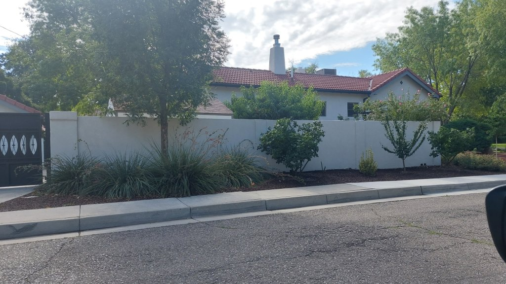
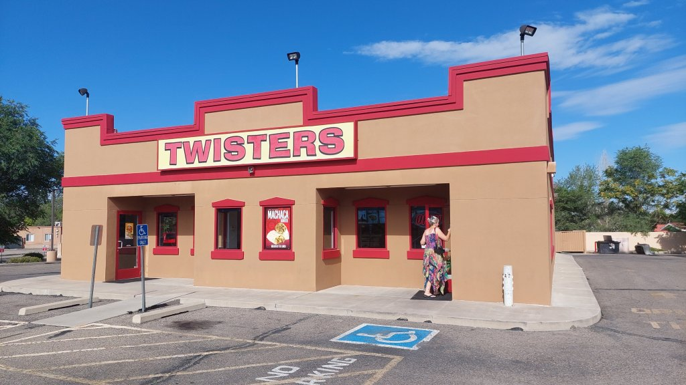
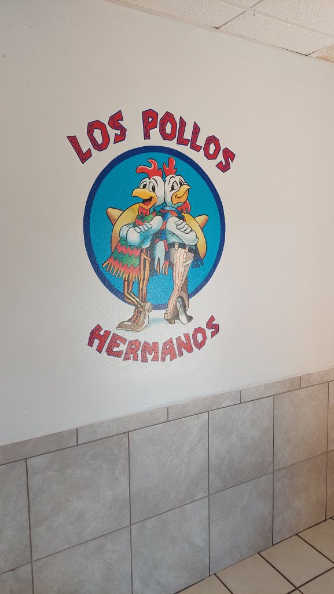
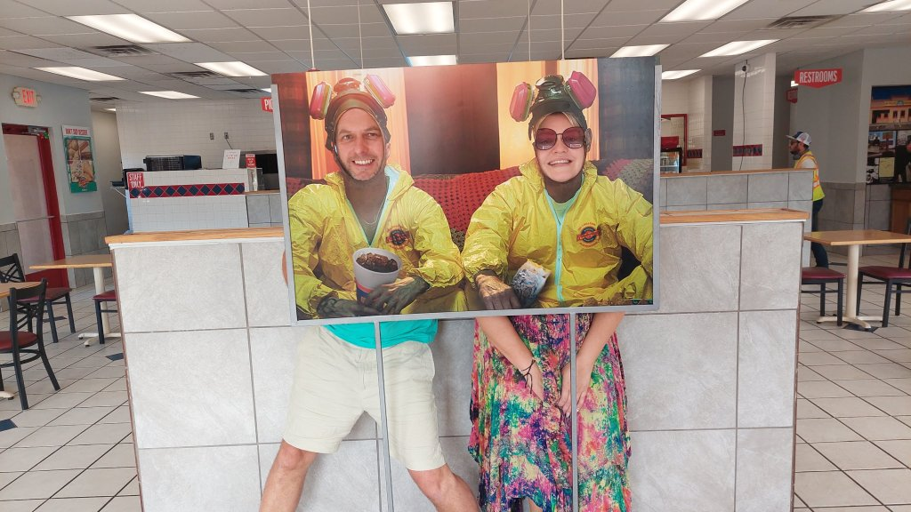
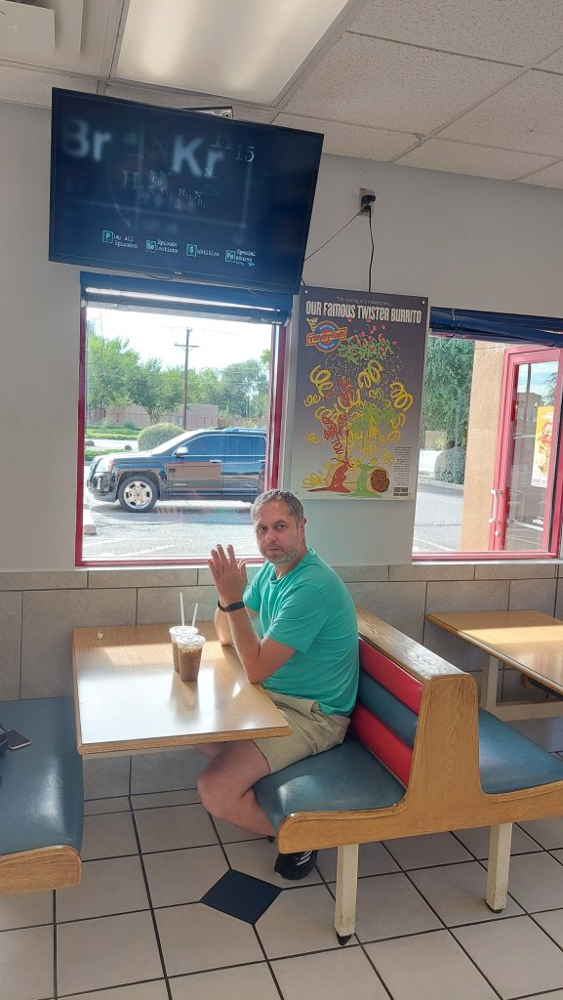
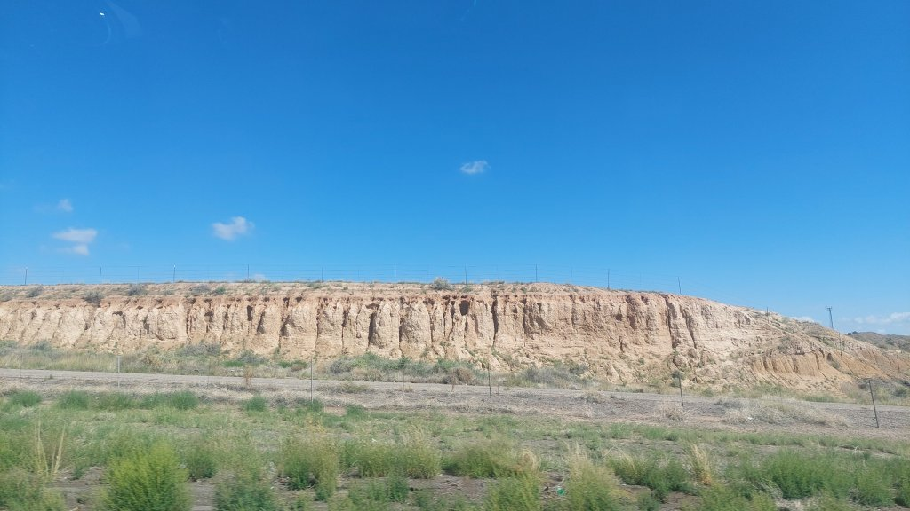
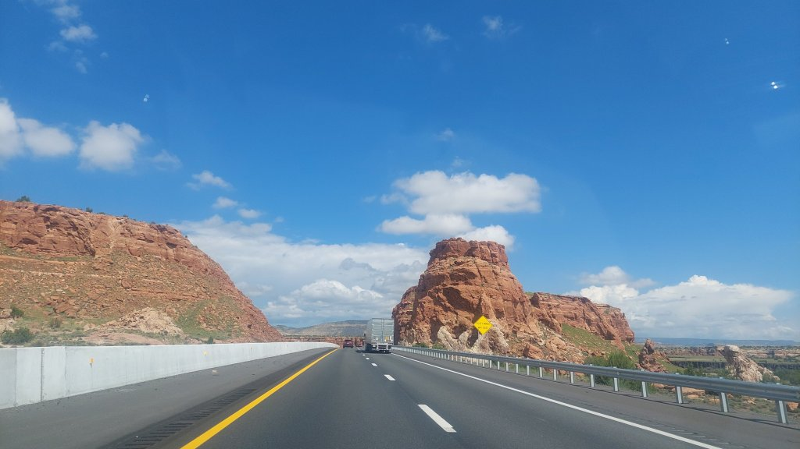
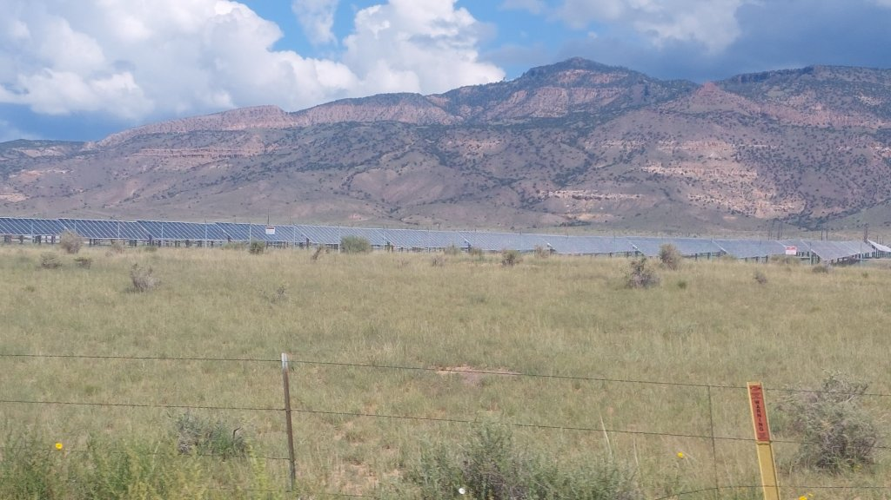
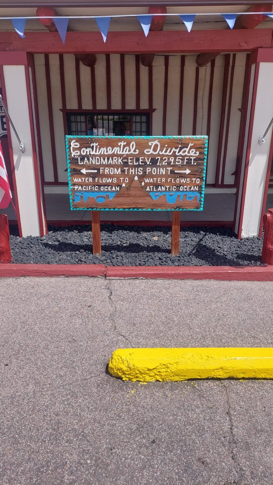
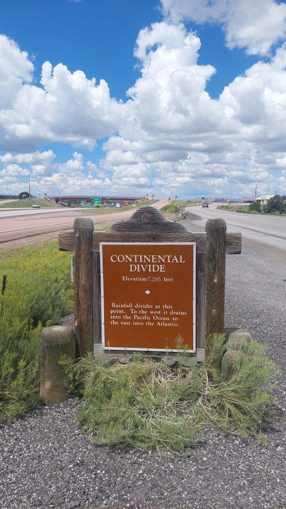
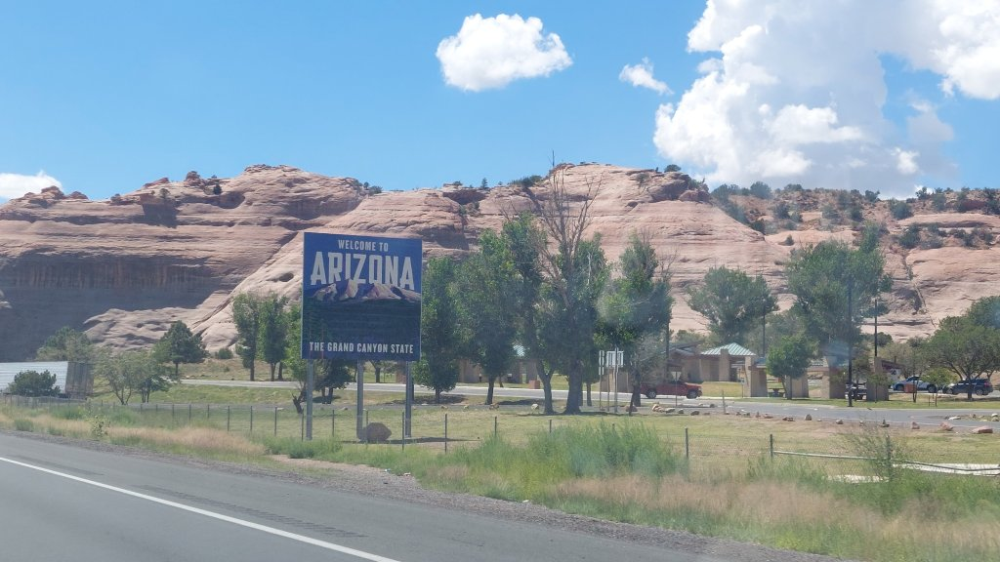
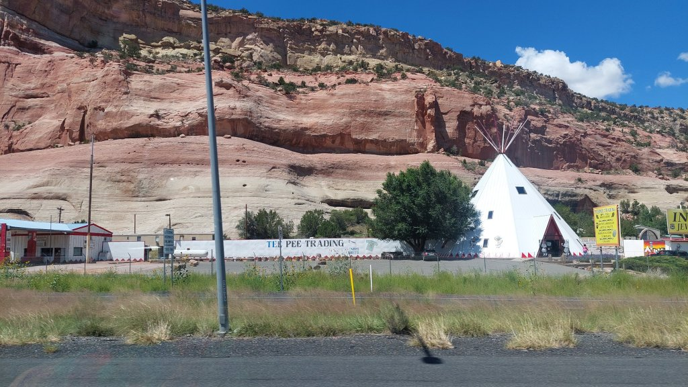
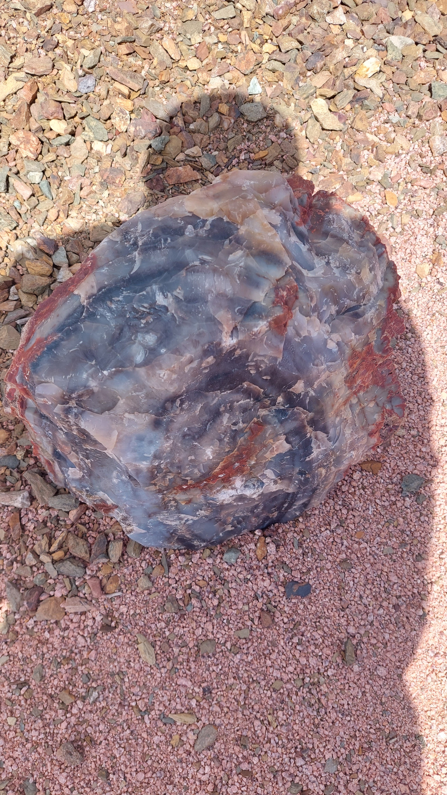
8604704453143131911.jpg)
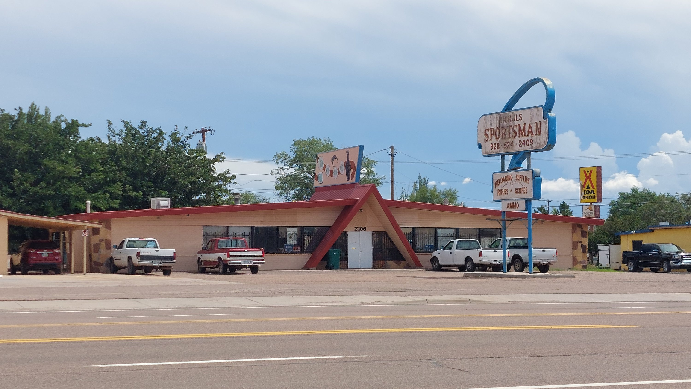